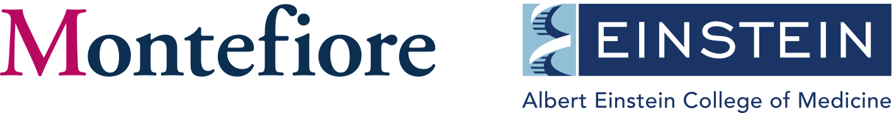

Looking for a meaningful job in which you will gain skills and work on societal health problems?
Join our team of health researchers in the Montefiore-Einstein Division of General Internal Medicine (DGIM) in the Bronx, New York!
We are seeking motivated college graduates to work as study coordinators on research studies about addiction, HIV, Hepatitis C, incarceration, LGBTQIA+ health, and more.
To apply, please send a cover letter explaining your interest and experience, along with your resume to Megan Ghiroli at mghiroli@montefiore.org.
